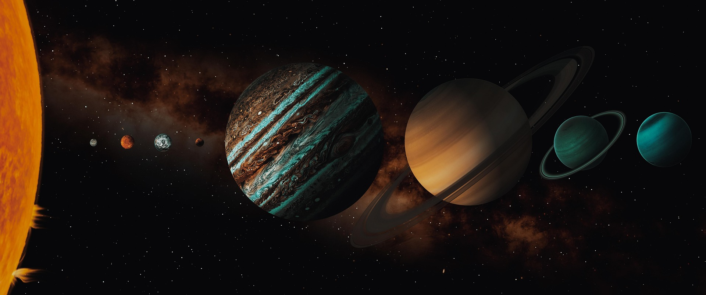
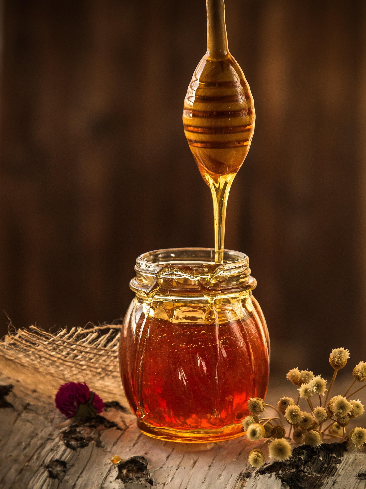
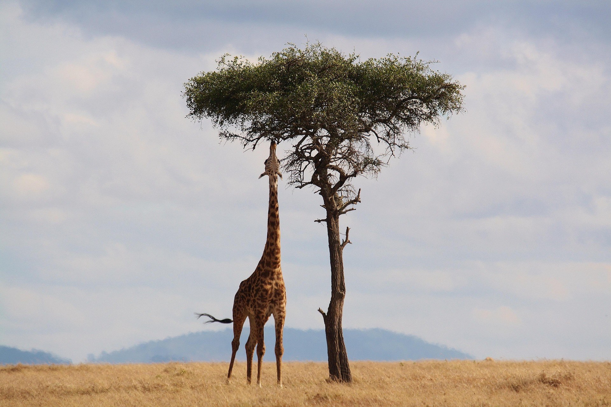

A Day on Venus is longer than its year! Venus takes about 243 Earth days to rotate once, but only 225 Earth days to orbit the Sun.

Honey can last Thousands of Years without spoiling! Archaelologists have found acient honey in egyptian tombs that was still preserved. Honey's low moisture and acidity helps keep bacteria from growing.

Some trees can recognize their own relatives! Certain trees, such as acacias, can release chemicals into the air when insects attack them. Nearby trees can detect these chemicals & activate some of their own defenses before the insects reach them
